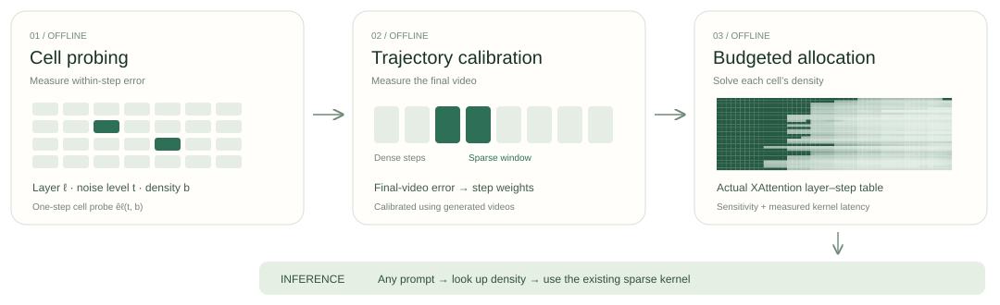

Sparsity Should Be ALLOTted by Output: Training-Free Allocation of Block-Sparse Attention for Video Diffusion Transformers
UCAS · CASIA · PKU · KlingAI Research
1UCAS 2CASIA 3PKU 4KlingAI Research · * Work done during an internship at KlingAI. † Corresponding author.
Representative comparison
Representative held-out prompt selected near the median paired PSNR gain on Wan2.1-1.3B with XAttention (480p, 81 frames, 50 steps): “Ashtray full of butts on table, smoke flowing on black background, close-up.” Replacing only the density allocation improves PSNR by +7.31 dB at matched wall-clock latency.
Overview
Full 3D attention is costly in video Diffusion Transformers, and block-sparse attention reduces this cost by computing only selected attention blocks. Existing pipelines, however, either overlook the potential to optimize sparsity allocation across layers and denoising steps or rely on heuristic rules and local metrics. We observe that sparsifying attention in different layer–step cells affects final-video fidelity to substantially different degrees, yet the sensitivity rankings of cells are nearly input-invariant across prompts.
Building on these findings, we propose ALLOT (Allocating Layer–step Latency by Output Tests), a training-free sparsity allocation method. Treating each layer–step pair as a cell, ALLOT combines cell probing and trajectory calibration to estimate each cell’s contribution to final-video error and allocate per-cell densities under a measured latency budget while preserving existing selection strategies and kernels. At equal or shorter wall-clock time, ALLOT achieves an 11.8 dB PSNR gain over XAttention’s default on HunyuanVideo and outperforms or ties the default in all nine settings across four additional published pipelines.
Method

Results
+11.8 dB
PSNR gain over XAttention’s default allocation on HunyuanVideo at equal or shorter wall-clock time, while outperforming every compared allocation strategy on Wan2.1-1.3B (+7.23 dB mean PSNR gain at 480p).
9 / 9
Settings that outperform or tie defaults across four additional pipelines (SVOO, SVG2, SpargeAttn, and Radial) on Wan2.1, Wan2.2, and HunyuanVideo—winning or tying in all nine settings.
5 pipelines
Total block-sparse attention pipelines evaluated (XAttention, SVOO, SVG2, SpargeAttn, and Radial) across four video diffusion backbones while leaving each pipeline’s selection strategy and sparse kernel unchanged.
Full Interactive Demo
Explore all 32 evaluation prompts across three measured Wan2.1-1.3B settings (XAttention 480p, SpargeAttn 480p, and SpargeAttn 720p), with interactive Dense / Default / ALLOT wipe comparisons, frame-by-frame stepping, region-of-interest crops, and the solved 50 × 30 layer–step density schedule.
Open the full interactive viewer (3 settings × 32 prompts) →
BibTeX
@misc{xia2026allot,
title = {Sparsity Should Be ALLOTted by Output: Training-Free Allocation of Block-Sparse Attention for Video Diffusion Transformers},
author = {Xia, Tianze and Zhou, Xiaoling and Lan, Ruya and Liao, Yiqiao and Song, Chengru and Xiang, Shiming},
year = {2026}
}